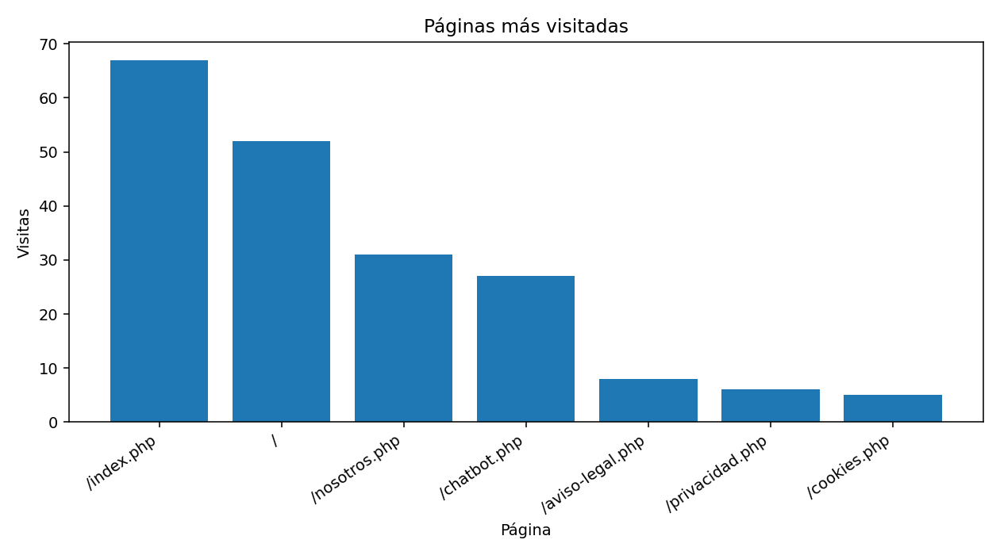
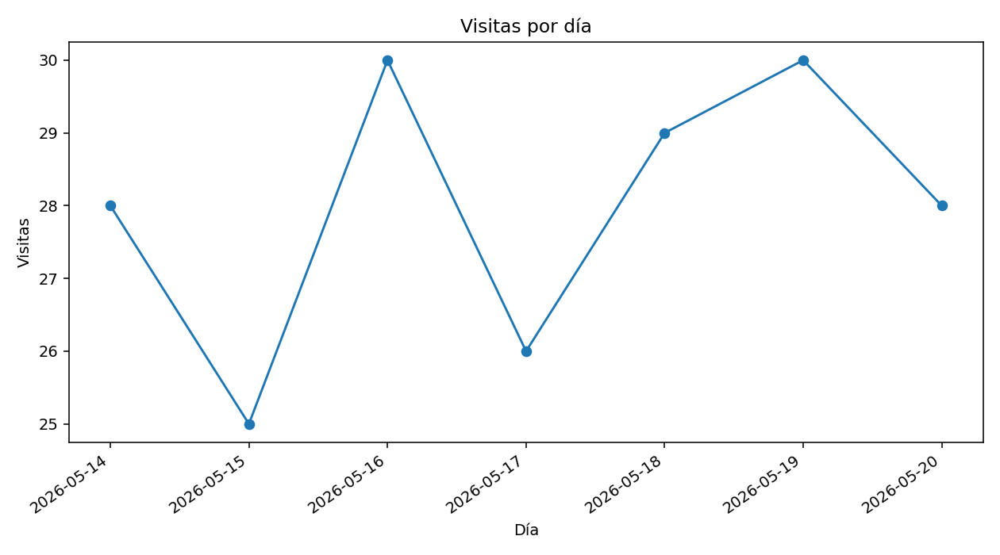
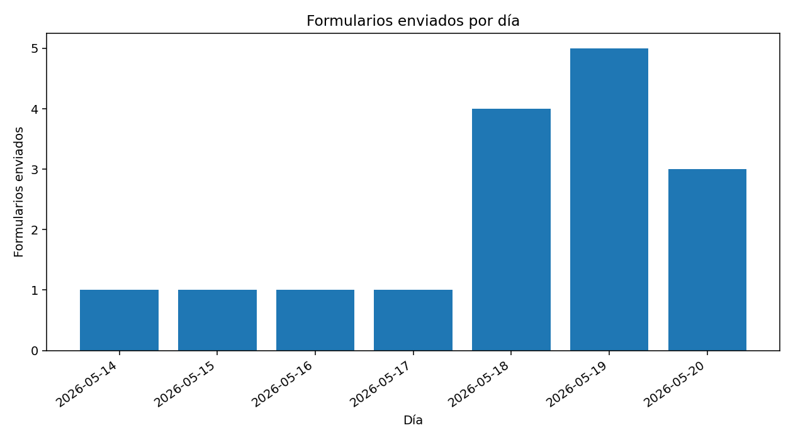
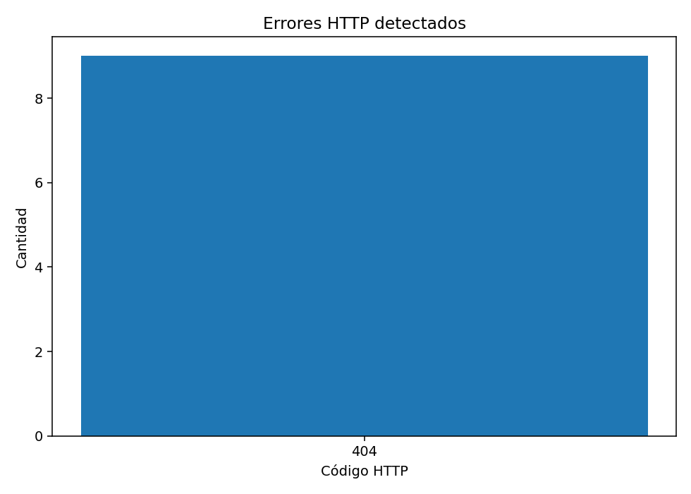
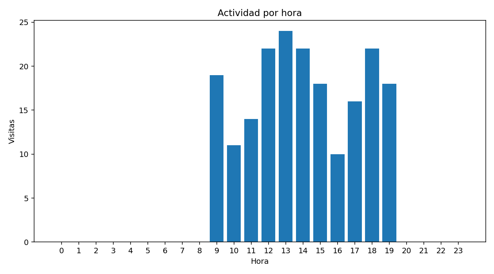

196
Visitas registradas
16
Formularios enviados
9
Errores detectados
0
Páginas revisadas por el minibot
0
Enlaces detectados
Gráficas de actividad





Gráfica no disponible: revision_minibot.png
Páginas más visitadas
| Página | Visitas |
|---|---|
| /index.php | 67 |
| / | 52 |
| /nosotros.php | 31 |
| /chatbot.php | 27 |
| /aviso-legal.php | 8 |
| /privacidad.php | 6 |
| /cookies.php | 5 |
Errores detectados
| Página | Código HTTP | Cantidad |
|---|---|---|
| /pagina-no-existe.php | 404 | 6 |
| /servicio-antiguo.php | 404 | 3 |
Revisión técnica del minibot
No hay datos disponibles.